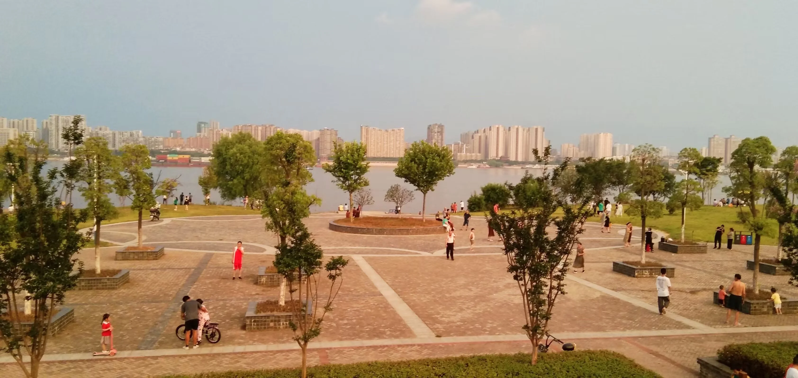

Journal · 2022-07-24
江西省九江市濂溪区
黄孝贤曾经写了一本回忆录，名叫《庐陵史话》。
在这本书里，真实的地名被重新命名了。「九江市」被诗意地称为「庐陵镇」，「黄冈市」被唤作「黄州府」，而那条横贯南北的「长江」，在他的笔下成了「浔江」。这不是一种逃避，而是一种创造。给土地重新取名，就是重新定义你与这片土地的关系。
此后，一位生于浔阳的少年，开始自称「庐陵镇做题家」。这个名号里有自嘲——「做题家」意味着他不是天才，只是靠刷题活下来的人。但也有骄傲——「庐陵镇」三个字，暗示他来自于一个有文化重量的地方，哪怕那个地方是他用想象重新建造的。
这个自称从那天起就粘在了他身上。往后的一切——高考、大学、编程、德语、这个网站——都从这个名号里生长出来。一个少年给自己取了名字，然后活成了那个名字的样子。

Huang Xiaoxian once wrote a memoir called Tales of Luling.
In this book, real place names were reinvented. "Jiujiang City" became poetically known as "Luling Town," "Huanggang City" was called "Huangzhou Prefecture," and the Yangtze River became the "Xun River" in his writing. This isn't evasion—it's creation. To rename the land is to redefine your relationship with it.
After that, a boy born in Xunyang began calling himself "the Luling Town Exam Grinder." There's self-deprecation in that name—"Exam Grinder" means he's no genius, just someone who survived by drilling problems. But there's also pride—"Luling Town" hints that he comes from a place of cultural weight, even if that place was rebuilt in his imagination.
That self-given name stuck to him from that day on. Everything that came after—the gaokao, university, programming, German, this website—grew out of that name. A boy gave himself a name, and then lived himself into it.
Huang Xiaoxian a jadis écrit un mémoire intitulé Récits de Luling.
Dans ce livre, les vrais noms de lieux ont été réinventés. « La ville de Jiujiang » est devenue poétiquement « le bourg de Luling », « la ville de Huanggang » a été nommée « la préfecture de Huangzhou », et le fleuve Yangtsé est devenu « la rivière Xun » sous sa plume. Ce n'est pas une fuite—c'est une création. Renommer la terre, c'est redéfinir ta relation avec elle.
Par la suite, un garçon né à Xunyang a commencé à s'appeler « le Bûcheur du bourg de Luling ». Il y a de l'autodérision dans ce nom—« Bûcheur » signifie qu'il n'est pas un génie, juste quelqu'un qui a survécu en enchaînant les exercices. Mais il y a aussi de la fierté—« le bourg de Luling » suggère qu'il vient d'un lieu chargé de culture, même si ce lieu a été reconstruit par son imagination.
Ce nom qu'il s'est donné lui est resté collé depuis ce jour. Tout ce qui a suivi—le gaokao, l'université, la programmation, l'allemand, ce site—a poussé à partir de ce nom. Un garçon s'est donné un nom, puis il est devenu ce nom.
Huang Xiaoxian schrieb einst eine Memoirensammlung mit dem Titel Erzählungen aus Luling.
In diesem Buch wurden echte Ortsnamen neu erfunden. „Jiujiang" wurde poetisch zu „Luling", „Huanggang" hieß darin „Präfektur Huangzhou", und der Jangtse wurde zum „Xun-Fluss". Das ist keine Flucht—es ist Schöpfung. Das Land neu zu benennen bedeutet, deine Beziehung zu ihm neu zu definieren.
Danach begann ein in Xunyang geborener Junge, sich selbst „den Prüfungsstreber aus Luling" zu nennen. In diesem Namen steckt Selbstironie—„Prüfungsstreber" bedeutet, er ist kein Genie, nur jemand, der durch Übungsaufgaben überlebt hat. Aber auch Stolz—„Luling" deutet an, dass er von einem Ort kulturellen Gewichts kommt, selbst wenn dieser Ort in seiner Vorstellung neu erbaut wurde.
Dieser selbstgegebene Name blieb von jenem Tag an an ihm haften. Alles, was danach kam—das Gaokao, die Universität, das Programmieren, Deutsch, diese Website—wuchs aus diesem Namen heraus. Ein Junge gab sich selbst einen Namen, und dann lebte er sich in diesen Namen hinein.
日记随笔源文本
黄孝贤曾经写了一本回忆录《庐陵史话》，其中“九江市”被称为“庐陵镇”，“黄冈市”被称为“黄州府”，“长江”被称为“浔江”。此后，一位生于浔阳的少年自称“庐陵镇做题家”！